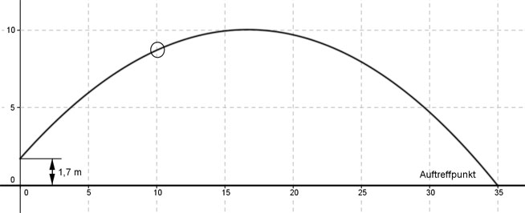
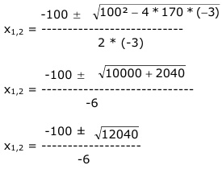

Aufgabe 134 Die Kugel bewegt sich beim Kugelstoß auf einer parabelförmigen Bahn. Diese Parabel hat die Funktionsgleichung y = -0,03x² + x + 1,7. Wie weit fliegt die Kugel, wenn der Kugelstoßer 1,70 m groß ist?  Der Schnittpunkt der Parabel mit der y-Achse liegt bei 1,7 m und entspricht dem Absolutglied in der Funktionsgleichung. In dieser Höhe verlässt die Kugel die Hand. Am Auftreffpunkt ist y = 0. Es sind die Nullstellen (y = 0) zu berechnen: 0 = - 0,03x² + x + 1,7 |*100 0 = - 3x² + 100x + 170 A, B, C - Formel: A = -3, B = 100, C = 170  -100 ± 109,7 x1,2 = ----------------- -6 9,9 x1 = ------ = - 1,65 keine Lösung, liegt außerhalb der Kugelstoßzone -6 -209,7 x2 = --------- = 34,95 m gerundet 35 m -6